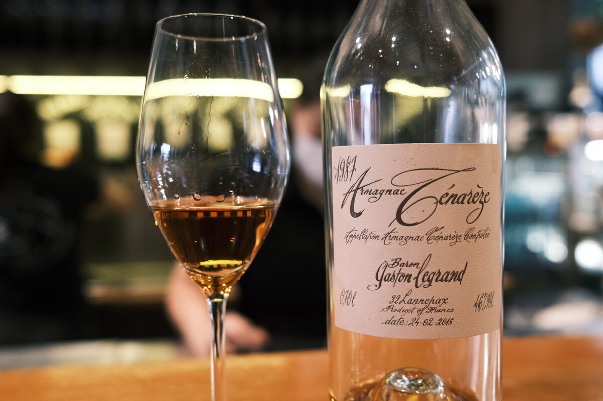

Baron Gaston Legrand 1987 Armagnac-Ténarèze 46%
Bottled 24 February 2015.
Colour Deep amber.
Nose Brown sugar. An explosion of both fresh and dried grapes. Fresh and leafy. Cinnamon buns. Candied orange and lemon peels: panettone! Beautifully perfumed. Oaky kick. A bit of chalk and minerality. Prunes and dates. Brioche. A splash of acidity: orange juice. Pears. So aromatic. A drop of soy sauce.
Palate Silky mouthfeel. Grape acidity and an elegant sweetness: fruit jams and marmalade. Very rich, moreish. Stewed fruits. Strawberry tarts and apple danishes. A little bit of greenness to it, a stemmy astringency: pleasant! Oaky notes: cinnamon and vanilla.
Finish Perfumed, and a little bit of oak. Brown sugar and hot cross buns. Baking spices. Creamy gelato. Full and warning. Long.
Comments Grand old Armagnac from my favourite region. Love the minerality on the nose. 88/100.

Posted by Dominic on 09 May 2021